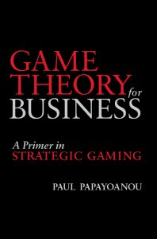
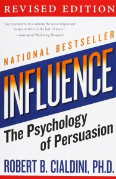

Knowledge Content Library
23
Ordered or Unordered? – A different angle from which to look at the complex issue of resource sustainability
Pat Leach, 2011 SDP Webinar (Invited Talk)
24
Rethinking VOI: How the Game Changes Things
Paul Papayoanou, 2011 SDP Webinar (Invited Talk)
29
Game Theory Yields New Insights to Decision Analysis in the Energy Industry
Frank Koch, 2010 SDP Webinar (Invited Talk)
442
Case Study: They Hate Us and Can’t Be Trusted: Formulating Development Strategy in a Cloud of Suspicion
Case Study by Bill Haskett, Haskett Consulting at 2019 DAAG Conference in Denver. This talk explores a case of formulating a development strategy in a condition of conflict.
276
Oil & Gas Appraisal and VOI: How the Game Changes Things
Presented by Paul Papayoanou (sgg) at 2011 DAAG Conference in Houston. Discussion of value of information within a game theory context.
continue to: decisionprofessionals.com
280
Order to Unorder - The Third Axis of DA (and how it applies to sustainable energy)
Presented by Pat Leach (Decision Strategies) at 2011 DAAG Conference in Houston. Discussion of Decision Analysis applied to complex ("unordered") systems.
continue to: decisionprofessionals.com
236
Game Theory and Player Volatility
Presented by Niall Fraser (Open Options Corp.) at 2009 DAAG Conference in Indianapolis. This presentation explores the forces behind player volatility in the current economic crisis, and examines the case of IBM championing Linux in an environment of player volatility in 2001 - 2003.
386
Use of a DA Process to Develop a Petroleum Upstream Fiscal and Regulatory Regime
Presented by Tony Kenck (ChevronTexaco) at 2003 DAAG Conference in Houston. This talk discusses the failed attempt to use DA framing to negotiate fiscal terms, and lessons learned.
383
Application of Game Theory to Business Decisions
Presented by Christine Clarke (CCS Incite) at 2003 DAAG Conference in Houston. This talk discusses the use of game theory in business decisions and contrasts it to traditional decision analysis.
continue to: decisionprofessionals.com
121
Mergers, Acquisitions and Licensing
Presented by Bill Haskett (Decision Strategies) at 2002 DAAG Conference in Las Vegas. Discussion of formulating negotiation strategies with approaches that balance value maximization with protection of downside risk.
continue to: decisionprofessionals.com
92
An Emergency Facilitation: Decision Analysis as a Mediation Tool
Presented by Bill Haskett (Decision Strategies) at 2000 DAAG Conference in Calgary. Example of using DA facilitation as a mediation tool for an organization with procedural blocks to progress.
continue to: decisionprofessionals.com
58
Value Focused Thinking

by Ralph Keeney (SDP Fellow)
A classic in the field of Decision Analysis, and for anyone seeking to make better decisions.
A classic in the field of Decision Analysis, and for anyone seeking to make better decisions.
continue to: amazon.com
155
Game Theory for Business: A Primer in Strategic Gaming

by Paul Papayoanou (SDP Fellow)
A practical guide to the incorporation of gaming elements into business decision making.
A practical guide to the incorporation of gaming elements into business decision making.
continue to: amazon.com
178
Influence: The Psychology of Persuasion

by Robert. B. Cialdini
Influence, the classic book on persuasion, explains the psychology of why people say "yes"—and how to apply these understandings.
Influence, the classic book on persuasion, explains the psychology of why people say "yes"—and how to apply these understandings.
continue to: amazon.com
347
Winning at Litigation through Decision Analysis: Creating and Executing Winning Strategies in any Litigation or Dispute

by John Celona
This book is the first in-depth guide to applying the philosophy, theory, and methods of decision analysis to creating and executing winning legal strategies.
This book is the first in-depth guide to applying the philosophy, theory, and methods of decision analysis to creating and executing winning legal strategies.
continue to: amazon.com
186
The Art of Strategy: A Game Theorist's Guide to Success in Business and Life

by Avinash Dixit and Barry Nalebuff
A highly accessible coverage of game theory.
A highly accessible coverage of game theory.
continue to: amazon.com
187
A Course in Microeconomic Theory

by David M. Kreps
Placing unusual emphasis on modern noncooperative game theory, it provides a unified treatment of modern microeconomic theory.
Placing unusual emphasis on modern noncooperative game theory, it provides a unified treatment of modern microeconomic theory.
continue to: amazon.com
348
The Art and Science of Negotiation

by Howard Raiffa
Raiffa emphasizes problems and situations where, with the kinds of skills he aims to develop, disputants can achieve results that are beneficial to all parties concerned.
Raiffa emphasizes problems and situations where, with the kinds of skills he aims to develop, disputants can achieve results that are beneficial to all parties concerned.
continue to: amazon.com
353
Negotiation Analysis: The Science and Art of Collaborative Decision Making

by Howard Raiffa with John Richardson and David Metcalfe
This masterly book substantially extends Howard Raiffa's earlier classic, The Art and Science of Negotiation. It does so by incorporating three additional supporting strands of inquiry: individual decision analysis, judgmental decision making, and game theory.
This masterly book substantially extends Howard Raiffa's earlier classic, The Art and Science of Negotiation. It does so by incorporating three additional supporting strands of inquiry: individual decision analysis, judgmental decision making, and game theory.
continue to: amazon.com
191
Game Theory and Strategy

by Philip D. Straffin
Applications of game theory in a wide variety of disciplines.
Applications of game theory in a wide variety of disciplines.
continue to: amazon.com